Relax, play, enjoy time together!
Eldritch Horror
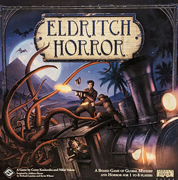
1–8 Players
120–240 Min
Age: 14+
It is a co-operative game of terror and adventure in which one to eight players take the roles of globetrotting investigators working to solve mysteries, gather clues, and protect the world from an Ancient One – that is, an elder being intent on destroying our world.
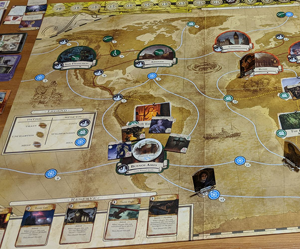
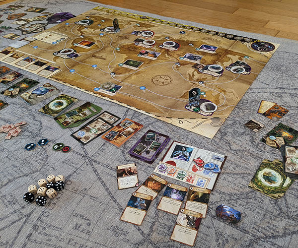
Fallout
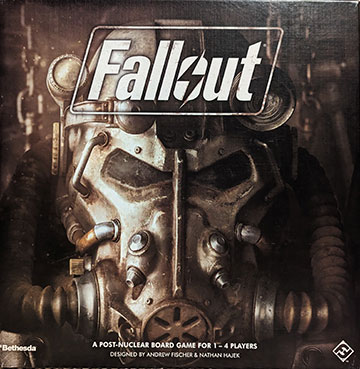
1–4 Players
120–180 Min
Age: 14+
It is a post-nuclear adventure board game for one to four players. Based on the hit video game series by Bethesda Softworks, each Fallout scenario is inspired by a familiar story from the franchise. Survivors begin the game on the edge of an unexplored landscape, uncertain of what awaits them in this unfamiliar world.
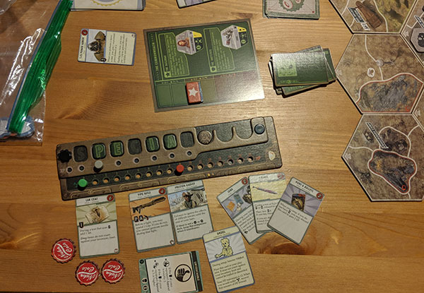
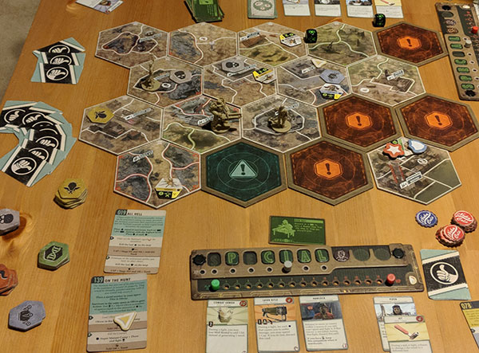
Dead of Winter: A Crossroads Game
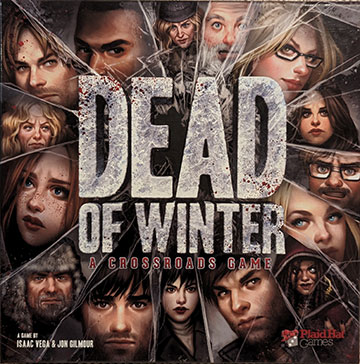
2–5 Players
60–120 Min
Age: 13+
It is a meta-cooperative psychological survival game. This means players are working together toward one common victory condition, but for each individual player to achieve victory, they must also complete their personal secret objective
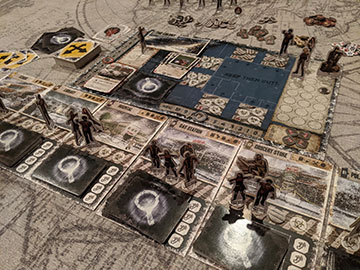
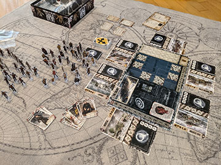
Agricola: Family Edition
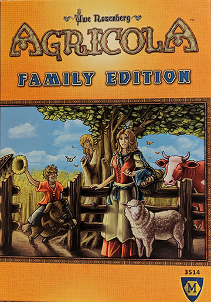
1–4 Players
45 Min
Age: 8+
It is a is a turn-based game. you're a farmer in a wooden shack with your spouse and little else. On a turn, you get to take only two actions, one for you and one for the spouse, from all the possibilities you'll find on a farm: collecting resources; building meadows; and so on.
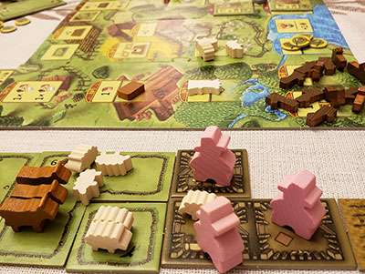
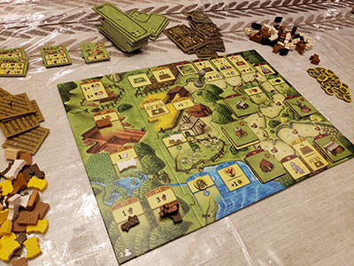
Rurik: Dawn of Kiev
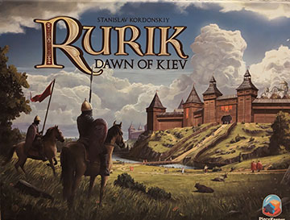
1–4 Players
60–120 Min
Age: 13+
It is a euro-style realm building game set in an 11th century Eastern European Kingdom. It features area control, resource management, and a new game mechanic - "auction programming."
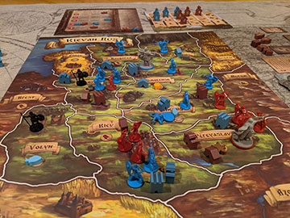
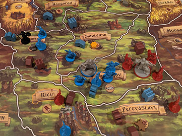
The Godfather: Corleone's Empire
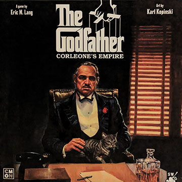
2–5 Players
60–90 Min
Age: 14+
It is a streamlined, confrontational worker placement game filled with murder and intrigue. You play as competing mafia families who are vying for economic control of the organized crime networks of New York City, deploying your thugs, your don, your wife, and your heir on the board to shake down businesses and engage in area-control turf wars.
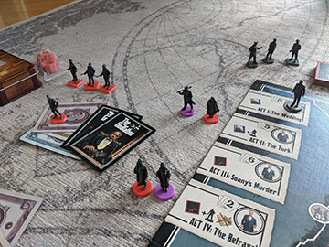
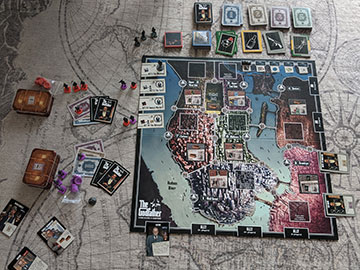